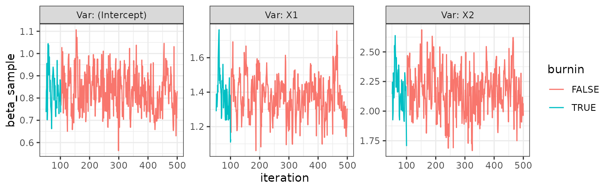

Family of response
The family of the response can be any family with an implemented
family class, in principle (see
help("family")). As of now, the implemented families in the
package are
- Gaussian
- Binomial
- Poisson
- Negative binomial
However, only a small amount of work is needed from the user to
enable the use of any family. The process of expanding available
families is described in vignette("customising").
Due to the implementation using a family object, This
also means that any compatible link function can be used for a family,
like fx. logit or probit for the binomial family. Also, the unexported
check_family function in the package ensures that accepted
values for the family argument in all the package’s
functions are a character, family function or
a family class object. The different uses will be seen
throughout the examples in this vignette but is also available in the
example section of the mcmcglm() documentation.
Data simulation for examples
In order to show that the package provides samples from the target posterior distribution, we simulate data for each scenario with known vector in order to see if the empirical distribution of each coefficient seems to match the value we simulated data from.
We start by generating a linear predictor from known values of and sampled values making up the design matrix . Then, in each example we can apply the relevant inverse link function to obtain the modelled mean in the GLM model. We can the simulate our response as sampling from the distribution corresponding to the family using the modelled mean as the relevant parameter of the distribution.
n <- 1000
x1 <- rnorm (n)
x2 <- rbinom (n, 1, .5)
b0 <- 1
b1 <- 1.5
b2 <- 2
lin_pred <- b0+b1*x1+b2*x2An example for the gaussian family is available in the introductory example in the README.
Example for binomial family
For the binomial family, the most commonly used link function is the logit given by
but other link functions are also available, including probit,
cauchit, log and cloglog (see help(family) for more
information).
We’ll show an example first for the binomial family with logit link function.
Logit link function
First, we define the data
logit_binom <- binomial(link = "logit")
mu_probit <- logit_binom$linkinv(lin_pred)
y_probit <- rbinom(n, size = 1, prob = mu_probit)
dat_probit <- data.frame(Y = y_probit, X1 = x1, X2 = x2)Then we fit the mcmcglm and inspect the trace plot.
probit <- mcmcglm(formula = Y ~ .,
data = dat_probit,
family = binomial(link = "probit"),
beta_prior = distributional::dist_normal(mean = 0, sd = 1),
w = 0.5)
probit
#> Object of class 'mcmcglm'
#>
#> Call: mcmcglm(formula = Y ~ ., family = binomial(link = "probit"),
#> data = dat_probit, beta_prior = distributional::dist_normal(mean = 0,
#> sd = 1), w = 0.5)
#>
#> Average of parameter samples:
#> (Intercept) X1 X2
#> 1 0.518525 0.8414789 1.202919
trace_plot(probit)
Probit link function
First, we define the data
probit_binom <- binomial(link = "probit")
mu_probit <- probit_binom$linkinv(lin_pred)
y_probit <- rbinom(n, size = 1, prob = mu_probit)
dat_probit <- data.frame(Y = y_probit, X1 = x1, X2 = x2)Then we fit the mcmcglm and inspect the trace plot.
probit <- mcmcglm(formula = Y ~ .,
data = dat_probit,
family = binomial(link = "probit"),
beta_prior = distributional::dist_normal(mean = 0, sd = 1),
w = 0.5)
probit
#> Object of class 'mcmcglm'
#>
#> Call: mcmcglm(formula = Y ~ ., family = binomial(link = "probit"),
#> data = dat_probit, beta_prior = distributional::dist_normal(mean = 0,
#> sd = 1), w = 0.5)
#>
#> Average of parameter samples:
#> (Intercept) X1 X2
#> 1 1.136727 1.495188 1.783416
trace_plot(probit)
Example for poisson family
For the poisson family, the most commonly used link function is log, which is the only one we will showcase as the above example for the binomial family shows how it’s easily possible to specify the link function.
Define the data
mu_log <- exp(lin_pred)
y_pois <- rpois(n, lambda = mu_log)
dat_pois <- data.frame(Y = y_pois, X1 = x1, X2 = x2)Then we fit the mcmcglm and inspect the trace plot.
pois <- mcmcglm(formula = Y ~ .,
data = dat_pois,
family = "poisson",
beta_prior = distributional::dist_normal(mean = 0, sd = 1),
w = 0.5)
pois
#> Object of class 'mcmcglm'
#>
#> Call: mcmcglm(formula = Y ~ ., family = "poisson", data = dat_pois,
#> beta_prior = distributional::dist_normal(mean = 0, sd = 1),
#> w = 0.5)
#>
#> Average of parameter samples:
#> (Intercept) X1 X2
#> 1 1.030941 1.505277 1.956556
trace_plot(pois)
Example for negative binomial family
Besides the families available in the stats package (via
help("family")), other families have been implemented in
various packages. Fx. the MASS::negative.binomial()
function which allows the use of the negative binomial family in various
inference procedures.
This distribution is an interesting choice for modelling of count data when a Poisson distribution is not appropriate due to the equality of the first and second moment of the distribution.
Below we showcase the use of this family using this package.
mu_log <- exp(lin_pred)
y_nbinom <- rnbinom(n, size = 1, mu = mu_log)
dat_nbinom <- data.frame(Y = y_nbinom, X1 = x1, X2 = x2)
theta <- 3Then we fit the mcmcglm and inspect the trace plot.
nbinom <- mcmcglm(formula = Y ~ .,
data = dat_nbinom,
family = MASS::negative.binomial(theta),
beta_prior = distributional::dist_normal(mean = 0, sd = 1),
w = 0.5)
nbinom
#> Object of class 'mcmcglm'
#>
#> Call: mcmcglm(formula = Y ~ ., family = MASS::negative.binomial(theta),
#> data = dat_nbinom, beta_prior = distributional::dist_normal(mean = 0,
#> sd = 1), w = 0.5)
#>
#> Average of parameter samples:
#> (Intercept) X1 X2
#> 1 0.9202369 1.581281 2.062504
trace_plot(nbinom)